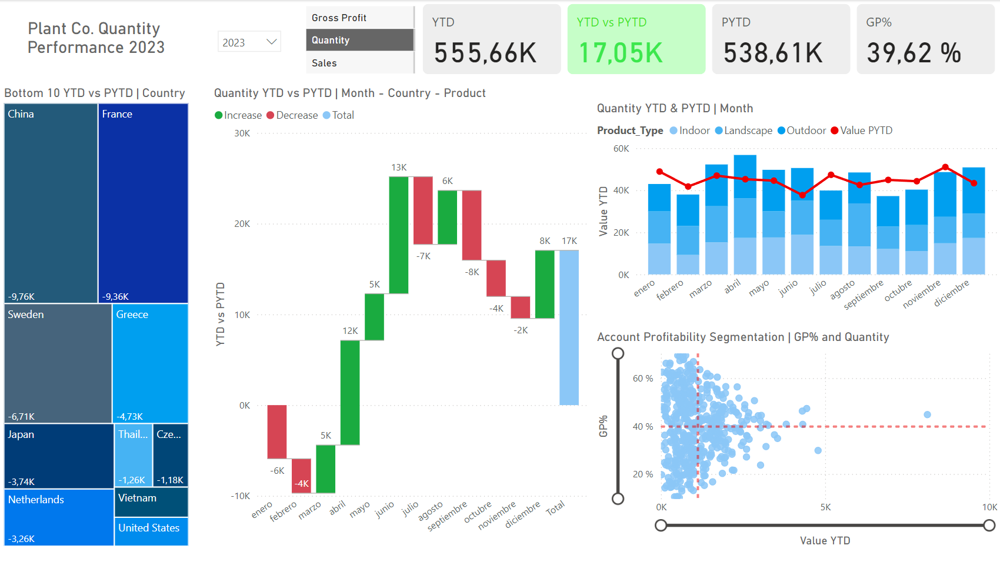
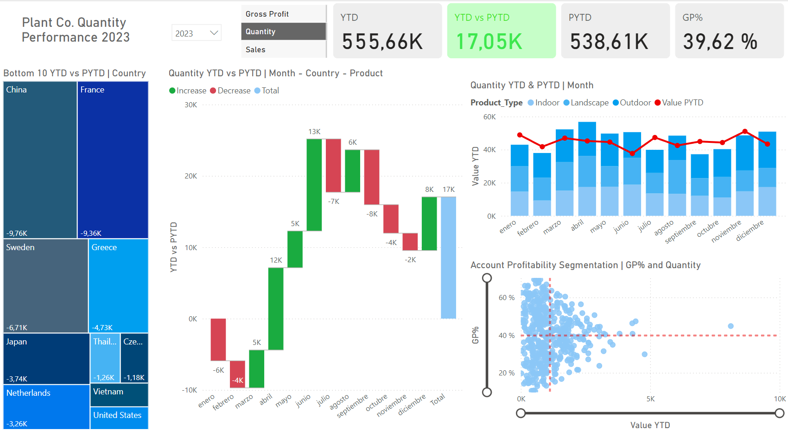

Informe de rendimiento de Plant Co.
Este informe de Power BI ofrece un análisis detallado del rendimiento de Plant Co. en diversas dimensiones, mostrando métricas clave y tendencias a través de visualizaciones interactivas.
Estudiante de Ciencia de Datos con buen manejo de Excel y Power BI, Python, Tableau y SQL.
Este informe de Power BI ofrece un análisis detallado del rendimiento de Plant Co. en diversas dimensiones, mostrando métricas clave y tendencias a través de visualizaciones interactivas.

Proyecto realizado en Python, en el que realizo un análisis descriptivo y exploratorio de un conjunto de datos sobre la enfermedad del cáncer.

Proyecto realizado en Python, en el que utilizo un CSV proveniente de una encuesta para tratar los datos ausentes y realizar la normalización.
Proyecto realizado en R, en el que realizo un análisis preliminar de los datos obtenidos a través de un conjunto de datos de un almacén.
Proyecto realizado en R, en el que utilizo un conjunto de datos sobre vinos para aplicar diferentes técnicas de reducción de variables y compararlas entre sí.
Proyecto realizado en R, en el que exploramos un conjunto de datos que contiene un estudio sobre la calidad del aire en Castilla y León, observamos las correlaciones entre las variables y realizamos un modelo de regresión lineal.

Un informe de Power BI que presenta un análisis exhaustivo de una encuesta realizada entre profesionales de datos. La encuesta tiene como objetivo proporcionar información sobre diversos aspectos de sus carreras, experiencias, habilidades y niveles de satisfacción.